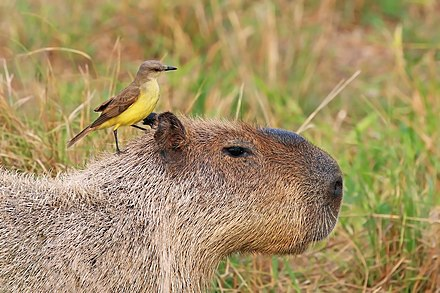

Capybara
The capybara[note 1] or greater capybara (Hydrochoerus hydrochaeris) is a giant cavy rodent native to South America. It is the largest living rodent[2] and a member of the genus Hydrochoerus. The only other extant member is the lesser capybara (Hydrochoerus isthmius). Its close relatives include guinea pigs and rock cavies, and it is more distantly related to the agouti, the chinchilla, and the nutria. The capybara inhabits savannas and dense forests and lives near bodies of water. It is a highly social species and can be found in groups as large as 100 individuals, but usually lives in groups of 10–20 individuals. The capybara is hunted for its meat and hide and also for grease from its thick fatty skin.[3] It is not considered a threatened species.Etymology
Its common name is derived from Tupi ka'apiûara, a complex agglutination of kaá (leaf) + píi (slender) + ú (eat) + ara (a suffix for agent nouns), meaning "one who eats slender leaves", or "grass-eater".[4]The scientific name, both hydrochoerus and hydrochaeris, comes from Greek ὕδρω (hydro "water") and χοῖρος (choiros "pig, hog").[5][6]Classification and phylogeny
The capybara and the lesser capybara both belong to the subfamily Hydrochoerinae along with the rock cavies. The living capybaras and their extinct relatives were previously classified in their own family Hydrochoeridae.[7] Since 2002, molecular phylogenetic studies have recognized a close relationship between Hydrochoerus and Kerodon, the rock cavies,[8] supporting placement of both genera in a subfamily of Caviidae.[5] Paleontological classifications previously used Hydrochoeridae for all capybaras, while using Hydrochoerinae for the living genus and its closest fossil relatives, such as Neochoerus,[9][10] but more recently have adopted the classification of Hydrochoerinae within Caviidae.[11] The taxonomy of fossil hydrochoerines is also in a state of flux. In recent years, the diversity of fossil hydrochoerines has been substantially reduced.[9][10] This is largely due to the recognition that capybara molar teeth show strong variation in shape over the life of an individual.[9] In one instance, material once referred to four genera and seven species on the basis of differences in molar shape is now thought to represent differently aged individuals of a single species, Cardiatherium paranense.[9] Among fossil species, the name "capybara" can refer to the many species of Hydrochoerinae that are more closely related to the modern Hydrochoerus than to the "cardiomyine" rodents like Cardiomys.[11] The fossil genera Cardiatherium, Phugatherium, Hydrochoeropsis, and Neochoerus are all capybaras under that concept.
